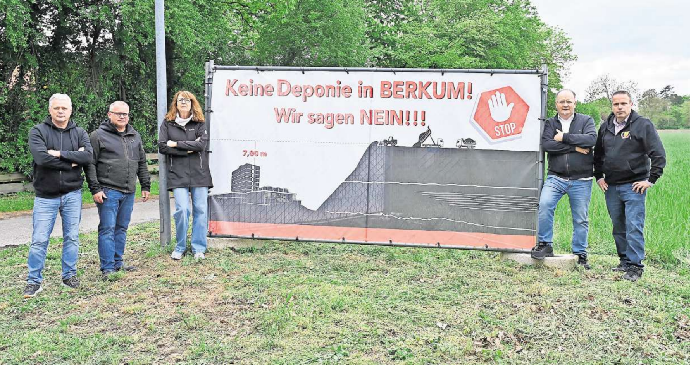

Asbestplatten
Asbestzement aus alten Dächern und Fassaden. Faserstaub gilt als krebserregend (Lungenkrebs, Mesotheliom). Über Jahre offene Anlieferung – bei Westwind in Richtung Peine.
Bürgerinitiative
Wir wehren uns gegen die geplante Reaktivierung der alten Peiner-Träger-Deponie bei Berkum – eine 30 Meter hohe Halde mit rund einer Million Kubikmeter belastetem Material vor den Toren der Stadt.
Zum Bürgerinfo-Abend am 13. Mai →
Bitte vormerken
Mittwoch, 18:30 Uhr
Forum Peine
Die Betreiber stellen ihre Pläne erstmals öffentlich vor. Kommen Sie zahlreich – jede Stimme zählt.
Die alte, längst überwucherte Peiner-Träger-Deponie am Eck von Mittellandkanal und Bundesstraße 65 – nur rund 500 Meter von Peine-Horst entfernt – soll als Deponie der Klasse II reaktiviert werden. Verantwortlich: die Strabag AG gemeinsam mit der Firma Bettels aus Hildesheim, betrieben durch die HK Rohstoff & Umwelttechnik.
Geplant ist eine Aufschüttung von 30 bis 35 Metern Höhe – höher als das Peiner Rathaus. Die Laufzeit: mindestens 20 Jahre. Auf dem rund 10 Hektar großen Gelände sollen rund eine Million Kubikmeter mineralische Abfälle eingelagert werden – darunter Bauschutt, Gips, Teer und potenziell auch Asbestplatten.

Zahlen kann man schwer fassen – darum hier ein paar greifbare Vergleiche.
Deponieklasse II nimmt belastete, aber nicht hoch gefährliche Stoffe auf – darunter auch Materialien, die niemand in seiner Nähe haben möchte:
Asbestzement aus alten Dächern und Fassaden. Faserstaub gilt als krebserregend (Lungenkrebs, Mesotheliom). Über Jahre offene Anlieferung – bei Westwind in Richtung Peine.
Mauerwerk, Beton, Mörtel – verunreinigt mit Schadstoffen aus alten Gebäuden, oft mit Rückständen alter Anstriche und Dämmstoffe.
Alter Straßenbelag mit Teer (PAK, polyzyklische aromatische Kohlenwasserstoffe). Auswaschungen können ins Grundwasser gelangen.
Gipsplatten, Putzreste, Sanitärabbruch. Sulfate können bei Niederschlag in den Untergrund gelangen.
Aushub von kontaminierten Standorten – etwa von Tankstellen, alten Industrieflächen oder Straßenrändern.
Reststoffe aus Müllverbrennungsanlagen und der Industrie – häufig mit Schwermetallen belastet.
In Deutschland gibt es fünf Deponieklassen (0 bis IV). Klasse II ist die zweithöchste Stufe für nicht-gefährliche Abfälle – die Stoffe sind belastet genug, dass sie eine Basisabdichtung gegen das Grundwasser brauchen.
Die Hauptwindrichtung in Deutschland ist Westwind – Staub und Emissionen ziehen direkt in Richtung Peine.
| Nächstes bewohntes Haus (Langer Damm, Handorf) | 330 m |
|---|---|
| Industriegebiet (Werner-Nordmeyer-Straße, Kreishaus 2) | 450 m |
| Hollandsmühle (Vater-Jahn-Platz, Tennisanlage) | 590 m |
| Berkum | 730 m |
| Wohngebiet Kiebitzmoor / Ginsterweg | 750 m |
| Handorf (erste Häuser) | ab 900 m |
Im Untergrund lagern hochgiftige Alt-Abfälle aus dem Hochofenwerk Ilsede (1930–1984) und Hunderttausende Kubikmeter Feinschlamm aus dem Peiner Stahlwerk (1984–1995). Die 2010 begonnene Versiegelung wurde 2014 abgebrochen. Wenn die alte Abdeckung jetzt erneut aufgerissen wird, droht eine Ausspülung der Schadstoffe ins Grundwasser.
Über Jahre soll Schutt – darunter potenziell Asbestplatten – aufgeschüttet werden. Bei Westwind weht der Staub direkt nach Peine. „Wohin wehen die Stäube, wenn über Jahre der ganze Schutt abgekippt wird?", fragt der ehemalige Ortsvorsteher Jürgen Müller.
Ein Großteil des Waldes – von der Brache bis zum Kanal – soll weichen. Erste Bäume wurden bereits gefällt. Das über die Jahre entstandene Biotop am Kanal müsste komplett entfernt werden.
„Das wird so hoch, dass es über die Baumwipfel an den Wegen und am Kanal herausragen wird – so einen Klotz gibt es bisher im ganzen Landkreis nicht", warnt Landwirt Henning Kolshorn.
„Einfach bitte die Abdeckung der alten Schlacken zu Ende führen, so wie es mal geplant war, und das Gelände in Ruhe lassen."
Berkum sagt NEIN zur Deponie – sagen auch Sie NEIN zur Ungewissheit.
Bürgerinitiative „Keine Deponie in Berkum"
Vertreten durch: [Name der verantwortlichen Person bitte ergänzen]